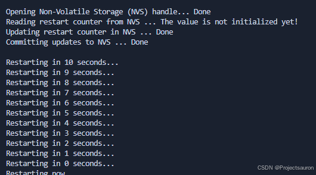
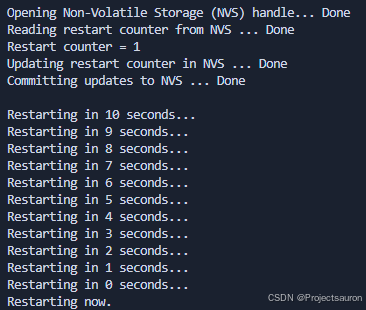
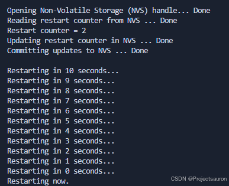
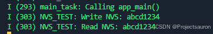

ESP32-IDF 非易失存储 NVS
@toc
零、前言
NVS（Non-volatile storage，非易失存储），意思是掉电后能依然能持久化保存数据。在我们应用 NVS 时，一般用于存储一些配置数据、状态数据等，一般不会用来存储存放大量的数据量。
在嵌入式系统中，NVS 主要是在 Flash 进行==键值对==的存储。举个例子，假设我们要把东西存到 Flash 中，按照底层的操作习惯，我们要先指定一个地址，然后对这个地址执行擦除操作，然后才能写入；读取的时候也需要根据这个地址，然后指定读取长度。如果我们要存的项比较多，又在代码中比较分散，我们对 Flash 的地址就很难管理。因为我们很难知道要存的内容与其他地址有没冲突，会不会误擦除。存在诸多问题。所以需要一个机制，方便帮我们把这些检测判断活都干了，不需要我们指定地址操作。文件系统就是这样的，但 NVS 操作更加轻量级。
在 NVS 中，我们要存一个值，我们不需要指定地址，但需要指定一个“键” key，然后我们在这个“键”索引下存我们的值 value。假设我们要存 WIFI 的 SSID 和 pasword，我们可以在 NVS 中这样定义：
1 | key = ssid,value = testwifi |
- 在键名 ssid 下，我们存的值是 testwifi
- 在键名 password 下，我们存的值是 12345678。
因此键名 key 一般不会修改，经常修改的是 value。
在 ESP32 中对于 NVS 的操作，还需要指定一个命名空间，是因为还考虑了一种情况，在各个不同的功能模块中，键名是有可能取到一样的，比如对于 WIFI 模块，存在一个 password 键名，对于管理员模块，可能也存在一个 password 键名，这样有可能就造成了重复，程序无法按我们的意思进行。如果我们增加了一个命名空间进行隔离，那么键名有重复也不怕，比如说在 WIFI 模块中，我们指定一个命名空间”wifi”，在此命名空间下有 ssid 和 password 键名；在管理员模块，我们指定一个命名空间”manager”，在此命名空间下有 password 键名，这两组命名空间互不干扰。
一、基本介绍
1、配置结构体
1.1 nvs_entry_info_t
存储从 nvs_entry_info() 中获取到的条目信息：
1 | typedef struct { |
2、常用 API
2.1 nvs_flash_init
1 | esp_err_t nvs_flash_init(void) |
- 作用
- 初始化默认 NVS 分区。默认 NVS 分区是在分区表中标记为 “nvs” 的分区。
- 返回值
ESP_OK：成功ESP_ERR_NVS_NO_FREE_PAGES NVS：存储是否不包含空页（如果 NVS 分区被截断，则可能会发生这种情况）ESP_ERR_NOT_FOUND：如果在分区表中找不到标签为 “nvs” 的分区ESP_ERR_NO_MEM：无法为内部结构分配内存
2.2 nvs_flash_init_partition
1 | esp_err_t nvs_flash_init_partition(const char *partition_label) |
- 参数
partition_label：分区的标签。不得超过 16 个字符。
- 作用
- 初始化指定分区的 NVS 闪存。
- 返回值
ESP_OK：成功ESP_ERR_NVS_NO_FREE_PAGES NVS：存储是否不包含空页（如果 NVS 分区被截断，则可能会发生这种情况）ESP_ERR_NO_MEM：无法为内部结构分配内存
2.3 nvs_flash_init_partition_ptr
1 | esp_err_t nvs_flash_init_partition_ptr(const esp_partition_t *partition) |
- 参数
partition：指向 ESP 分区 API 获取的分区的指针。
- 作用
- 初始化分区指针指定的分区的 NVS 闪存存储。
- 返回值
ESP_OK：成功ESP_ERR_NVS_NO_FREE_PAGES NVS：存储是否不包含空页（如果 NVS 分区被截断，则可能会发生这种情况）ESP_ERR_NO_MEM：无法为内部结构分配内存
2.4 nvs_flash_erase
1 | esp_err_t nvs_flash_init_partition_ptr(const esp_partition_t *partition) |
- 参数
partition：指向 ESP 分区 API 获取的分区的指针。
- 作用
- 擦除默认 NVS 分区（带有标签 “nvs” 的分区）的所有内容。
- 返回值
ESP_OK：成功ESP_ERR_NVS_NO_FREE_PAGES NVS：存储是否不包含空页（如果 NVS 分区被截断，则可能会发生这种情况）
如果分区已初始化，则此函数首先 deinit 它。之后，必须再次初始化分区才能使用。
2.5 nvs_flash_erase_partition
1 | esp_err_t nvs_flash_erase_partition(const char *part_name) |
- 参数
part_name：应擦除的分区的名称 （标签）
- 作用
- 擦除指定的 NVS 分区。
- 返回值
ESP_OK：成功ESP_ERR_NVS_NO_FREE_PAGES NVS：存储是否不包含空页（如果 NVS 分区被截断，则可能会发生这种情况）
如果分区已初始化，则此函数首先 deinit 它。之后，必须再次初始化分区才能使用。
2.6 nvs_flash_erase_partition_ptr
1 | esp_err_t nvs_flash_erase_partition_ptr(const esp_partition_t *partition) |
- 参数
partition：指向 ESP 分区 API 获取的分区的指针。
- 作用
- 擦除指定自定义分区的所有内容。
- 返回值
ESP_OK：成功ESP_ERR_NVS_NO_FREE_PAGES NVS：存储是否不包含空页（如果 NVS 分区被截断，则可能会发生这种情况）ESP_ERR_INVALID_ARG：分区为 NULL
如果分区已初始化，则此函数首先 deinit 它。之后，必须再次初始化分区才能使用。
2.7 nvs_flash_generate_keys
1 | esp_err_t nvs_flash_generate_keys(const esp_partition_t *partition, nvs_sec_cfg_t *cfg) |
- 参数
partition：向使用esp_partition_find_first或esp_partition_get获取的分区结构的指针。必须为非 NULL。cfg：指向 nvs 安全配置结构的指针。指针必须为非 NULL。生成的键将填充到此结构中。
- 作用
- 擦除指定自定义分区的所有内容。
- 返回值
ESP_OK：成功ESP_ERR_INVALID_ARG：partition 或 cfg 为 NULL
2.8 nvs_set_i8
1 | esp_err_t nvs_set_i8(nvs_handle_t handle, const char *key, int8_t value) |
- 参数
handle：向使用esp_partition_find_first或esp_partition_get获取的分区结构的指针。必须为非 NULL。key：键名称。最大长度为 （NVS_KEY_NAME_MAX_SIZE-1） 个字符。不应为空。value：要设置的值。
- 作用
- 为给定键设置
int8_t值
- 为给定键设置
- 返回值
ESP_OK：成功ESP_FAIL：如果存在内部错误;很可能是由于 NVS 分区损坏（仅当禁用 NVS 断言检查时）ESP_ERR_NVS_INVALID_HANDLE：句柄是否已关闭或为 NULLESP_ERR_NVS_READ_ONLY：如果存储句柄以只读方式打开ESP_ERR_NVS_INVALID_NAME：key name 不满足 constraintsESP_ERR_NVS_NOT_ENOUGH_SPACE：如果底层存储中没有足够的空间来保存值ESP_ERR_NVS_REMOVE_FAILED：值是否因闪存写入操作失败而未更新。但是，该值已写入，并且 update 将在重新初始化 nvs 后完成，前提是 flash 操作不会再次失败。
nvs_set_*：类似的还有 u8、i16、u16、i32、u32、i64、u64、str
2.8.1 nvs_set_blob
1 | esp_err_t nvs_set_blob(nvs_handle_t handle, const char *key, const void *value, size_t length) |
相比其它几个 get 函数，要注意一下：
value：要设置的值。length： 要设置的二进制值的长度，以字节为单位;最大长度为 508000 字节或（分区大小的 97.6% - 4000）字节，以较低者为准。
2.9 nvs_get_u8
1 | esp_err_t nvs_get_u8(nvs_handle_t handle, const char *key, uint8_t *out_value) |
- 参数
handle：向使用esp_partition_find_first或esp_partition_get获取的分区结构的指针。必须为非 NULL。key：键名称。最大长度为 （NVS_KEY_NAME_MAX_SIZE-1） 个字符。不应为空。value：存储要获取的值。
- 作用
- 获取给定键
uint8_t值
- 获取给定键
- 返回值
ESP_OK：成功ESP_FAIL：如果存在内部错误;很可能是由于 NVS 分区损坏（仅当禁用 NVS 断言检查时）ESP_ERR_NVS_INVALID_HANDLE：句柄是否已关闭或为 NULLESP_ERR_NVS_READ_ONLY：如果存储句柄以只读方式打开ESP_ERR_NVS_INVALID_NAME：key name 不满足 constraintsESP_ERR_NVS_NOT_ENOUGH_SPACE：如果底层存储中没有足够的空间来保存值ESP_ERR_NVS_REMOVE_FAILED：值是否因闪存写入操作失败而未更新。但是，该值已写入，并且 update 将在重新初始化 nvs 后完成，前提是 flash 操作不会再次失败。
nvs_get_*：类似的还有 u8、i16、u16、i32、u32、i64、u64、str、blob
2.9.1 nvs_get_blob/nvs_get_str
1 | esp_err_t nvs_get_blob(nvs_handle_t handle, const char *key, void *out_value, size_t *length) |
相比其它几个 get 函数，要注意一下：
out_value：指向输出值的指针。对于nvs_get_str和nvs_get_blob可能为 NULL，在这种情况下，所需长度将在 length 参数中返回。length： 一个非零指针，指向保存out_value长度的变量。- 如果
out_value为 NULL，则将设置为保存该值所需的长度。 - 如果
out_value不为零，则将设置为写入值的实际长度。对于nvs_get_str来说，nvs_get_blob还包括零终止符。
- 如果
2.10 nvs_open
1 | esp_err_t nvs_open(const char *namespace_name, nvs_open_mode_t open_mode, nvs_handle_t *out_handle) |
- 参数
namespace_name：Namespace 名称。最大长度为 （NVS_KEY_NAME_MAX_SIZE-1） 个字符。不应为空。open_mode：NVS_READWRITE或NVS_READONLY。如果NVS_READONLY，将打开仅用于读取的句柄。此 handle 的所有写入请求都将被拒绝。out_handle：如果成功（返回代码为零），则在此参数中返回 handle。
- 作用
- 从默认 NVS 分区中打开具有给定命名空间的非易失性存储。
- 返回值
ESP_OK：成功ESP_FAIL：如果存在内部错误;很可能是由于 NVS 分区损坏（仅当禁用 NVS 断言检查时）ESP_ERR_NVS_INVALID_HANDLE：句柄是否已关闭或为 NULLESP_ERR_NVS_READ_ONLY：如果存储句柄以只读方式打开ESP_ERR_NVS_INVALID_NAME：key name 不满足 constraintsESP_ERR_NVS_NOT_ENOUGH_SPACE：如果底层存储中没有足够的空间来保存值ESP_ERR_NVS_REMOVE_FAILED：值是否因闪存写入操作失败而未更新。但是，该值已写入，并且 update 将在重新初始化 nvs 后完成，前提是 flash 操作不会再次失败。
esp_err_t nvs_open_from_partition(const char *part_name, const char *namespace_name, nvs_open_mode_t open_mode, nvs_handle_t *out_handle)类似，不过是从指定分区打开具有给定命名空间的非易失性存储器。
2.11 nvs_find_key
1 | esp_err_t nvs_find_key(nvs_handle_t handle, const char *key, nvs_type_t *out_type) |
- 参数
namespace_name：通过nvs_open获得的存储句柄。key：键名称。最大长度为 （NVS_KEY_NAME_MAX_SIZE-1） 个字符。不应为空。out_type：指向输出变量的指针，该变量填充了 NVS 条目的数据类型，以防找到 key 的情况。可能为 NULL，则不提供相应的数据类型。
- 作用
- 查找具有给定键名称的键值对。
- 返回值
ESP_OK：成功ESP_FAIL：如果存在内部错误;很可能是由于 NVS 分区损坏（仅当禁用 NVS 断言检查时）ESP_ERR_NVS_INVALID_HANDLE：句柄是否已关闭或为 NULLESP_ERR_NVS_READ_ONLY：如果存储句柄以只读方式打开ESP_ERR_NVS_INVALID_NAME：key name 不满足 constraintsESP_ERR_NVS_NOT_ENOUGH_SPACE：如果底层存储中没有足够的空间来保存值ESP_ERR_NVS_REMOVE_FAILED：值是否因闪存写入操作失败而未更新。但是，该值已写入，并且 update 将在重新初始化 nvs 后完成，前提是 flash 操作不会再次失败。
请注意，如果找到密钥，函数可能同时指示密钥的存在以及 NVS 条目的数据类型。
nvs_erase_key 是擦除具有给定键名称的键值对。
1 | esp_err_t nvs_erase_key(nvs_handle_t handle, const char *key) |
nvs_erase_all 是擦除命名空间中的所有键值对。
1 | esp_err_t nvs_erase_all(nvs_handle_t handle) |
2.12 nvs_commit
1 | esp_err_t nvs_commit(nvs_handle_t handle) |
- 参数
handle：通过nvs_open获得的存储句柄。不能使用以只读方式打开的句柄。
- 作用
- 将任何待处理的更改写入非易失性存储。
- 返回值
ESP_OK：成功ESP_ERR_NVS_INVALID_HANDLE：句柄是否已关闭或为 NULL
设置任何值后，必须调用
nvs_commit()以确保将更改写入非易失性存储。单个 implementations 可能会在其他时间写入 storage，但不能保证这一点。
2.13 nvs_close
1 | void nvs_close(nvs_handle_t handle) |
- 参数
handle：要关闭的存储 handle
- 作用
- 关闭存储 handle 并释放所有已分配的资源。
2.14 nvs_entry_find_in_handle
1 | esp_err_t nvs_entry_find_in_handle(nvs_handle_t handle, nvs_type_t type, nvs_iterator_t *output_iterator) |
- 参数
handle：通过nvs_open获得的存储句柄。不能使用以只读方式打开的句柄。type：nvs_type_t值之一。output_iterator：设置为有效的迭代器以枚举找到的所有条目。- 如果未找到指定条件的条目，则设置为 NULL。
- 如果发生除
ESP_ERR_INVALID_ARG以外的任何其他错误，output_iterator也为 NULL。 - 如果发生
ESP_ERR_INVALID_ARG，则不会更改output_iterator。 - 如果通过此函数获得有效的迭代器，则必须在不再使用时使用
nvs_release_iterator释放它，除非返回ESP_ERR_INVALID_ARG。
- 作用
- 创建迭代器以根据句柄和类型枚举 NVS 条目。
- 返回值
ESP_OK：成功ESP_ERR_NVS_INVALID_HANDLE：句柄是否已关闭或为 NULLESP_ERR_NVS_NOT_FOUND：未找到指定条件的元素ESP_ERR_NO_MEM：在分配内部结构期间内存是否已耗尽。ESP_ERR_INVALID_ARG：如果output_iterator参数为 NULL。注意：如果ESP_ERR_INVALID_ARG已被退回，请不要释放output_iterator
2.15 nvs_entry_next
1 | esp_err_t nvs_entry_next(nvs_iterator_t *iterator) |
- 参数
iterator：从nvs_entry_find或nvs_entry_find_in_handle函数获得的迭代器。必须为非 NULL。- 如果发生除
ESP_ERR_INVALID_ARG之外的任何错误，则 iterator 设置为 NULL。 - 如果出现
ESP_ERR_INVALID_ARG，则不会更改 iterator。
- 如果发生除
- 作用
- 将迭代器前进到与迭代器条件匹配的下一个项目。
- 返回值
ESP_OK：成功ESP_ERR_NVS_NOT_FOUND：未找到指定条件的元素ESP_ERR_INVALID_ARG：如果有参数为 NULL。注意：如果ESP_ERR_INVALID_ARG已被退回，请不要释放output_iterator
请注意，在此调用后，迭代器的任何副本都将无效。
2.16 nvs_entry_info
1 | esp_err_t nvs_entry_info(const nvs_iterator_t iterator, nvs_entry_info_t *out_info) |
- 参数
iterator： 从nvs_entry_find或nvs_entry_find_in_handle函数获取的 Iterator。必须为非 NULL。out_info：将条目信息复制到的结构体。
- 作用
- 将任何待处理的更改写入非易失性存储。
- 返回值
ESP_OK：成功ESP_ERR_INVALID_ARG：如果有参数为 NULL。注意：如果ESP_ERR_INVALID_ARG已被退回，请不要释放output_iterator
2.17 nvs_release_iterator
1 | void nvs_release_iterator(nvs_iterator_t iterator) |
- 参数
iterator：从 nvs_entry_find 或 nvs_entry_find_in_handle 或 nvs_entry_next 函数获得的 Release 迭代器。允许 NULL 参数。
- 作用
- 释放迭代器。
3、枚举类型
3.1 nvs_open_mode_t
打开类型：
1 | typedef enum { |
3.2 nvs_type_t
数据类型：
1 | typedef enum { |
二、NVS
1、底层存储
NVS 库通过调用 esp_partition() 使用主 flash 的部分空间，即类型为 data 且子类型为 nvs 的所有分区。应用程序可调用 nvs_open() 选择使用带有 nvs 标签的分区，也可以通过调用 nvs_open_from_partition() 选择使用指定名称的任意分区。
如果 NVS 分区被截断（例如，更改分区表布局时），则应擦除分区内容。可以使用 ESP-IDF 构建系统中的
idf.py erase-flash命令擦除 flash 上的所有内容。
2、键值对
NVS 的操作对象为键值对，其中键是 ASCII 字符串，当前支持的最大键长为 15 个字符。值可以为以下几种类型：
- 整数型：
uint8_t、int8_t、uint16_t、int16_t、uint32_t、int32_t、uint64_t和int64_t； - 以 0 结尾的字符串；
- 可变长度的二进制数据 (BLOB)
注意，字符串值当前上限为 4000 字节，其中包括空终止符。BLOB 值上限为 508,000 字节或分区大小的 97.6% 减去 4000 字节，以较低值为准。
键必须唯一。为现有的键写入新值时，会将旧的值及数据类型更新为写入操作指定的值和数据类型。
读取值时会执行数据类型检查。如果读取操作预期的数据类型与对应键的数据类型不匹配，则返回错误。
3、命名空间
为了减少不同组件之间键名的潜在冲突，NVS 将每个键值对分配给一个命名空间。命名空间的命名规则遵循键名的命名规则：
- 键名最多可占 15 个字符
- 单个 NVS 分区最多只能容纳 254 个不同的命名空间
命名空间的名称在调用 nvs_open() 或 nvs_open_from_partition 中指定，调用后将返回一个不透明句柄，用于后续调用 nvs_get_*、nvs_set_* 和 nvs_commit 函数。这样，一个句柄关联一个命名空间，键名便不会与其他命名空间中相同键名冲突。请注意，不同 NVS 分区中具有相同名称的命名空间将被视为不同的命名空间。
4、NVS 迭代器
迭代器允许根据指定的分区名称、命名空间和数据类型轮询 NVS 中存储的键值对。
使用以下函数，可执行相关操作：
nvs_entry_find：创建一个不透明句柄，用于后续调用nvs_entry_next和nvs_entry_info函数；nvs_entry_next：让迭代器指向下一个键值对；nvs_entry_info：返回每个键值对的信息。
总的来说，所有通过 nvs_entry_find() 获得的迭代器（包括 NULL 迭代器）都必须使用 nvs_release_iterator() 释放。
一般情况下，nvs_entry_find() 和 nvs_entry_next() 会将给定的迭代器设置为 NULL 或为一个有效的迭代器。但如果出现参数错误（如返回 ESP_ERR_NVS_NOT_FOUND），给定的迭代器不会被修改。因此，在调用 nvs_entry_find() 之前最好将迭代器初始化为 NULL，这样可以避免在释放迭代器之前进行复杂的错误检查。
5、NVS 分区生成程序
NVS 分区生成程序帮助生成 NVS 分区二进制文件，可使用烧录程序将二进制文件单独烧录至特定分区。烧录至分区上的键值对由 CSV 文件提供。
可以直接使用函数 nvs_create_partition_image 通过 CMake 创建分区二进制文件，无需手动调用 nvs_partition_gen.py 工具:
1 | nvs_create_partition_image(<partition> <csv> [FLASH_IN_PROJECT] [DEPENDS dep dep dep ...]) |
- 位置参数
partition：NVS 分区名csv：解析的 CSV 文件路径
- 可选参数
FLASH_IN_PROJECT：NVS 分区名DEPENDS：指定命令依赖的文件
在没有指定 FLASH_IN_PROJECT 的情况下，也支持生成分区镜像，不过此时需要使用 idf.py <partition>-flash 手动进行烧录。举个例子，如果分区名为 nvs，则需使用的命令为 idf.py nvs-flash。
目前，仅支持从组件中的 CMakeLists.txt 文件调用 nvs_create_partition_image，且此选项仅适用于非加密分区。
三、实例操作
1、例一——读写操作实验
本例中向 NVS 分区中的 storage 命名空间写入数据，并读出数据，并验证了 NVS 分区的掉电不丢失的特性：
1 | void app_main(void) |



2、例二——blob 的写入和读取
blob 的读取（以及 str 的读取）有一点小技巧，因为事先读取的时候，我们并不知道要读取的 blob 数据的长度，所以我们可以利用 nvs_get_blob 的功能，先将第三个参数设为 NULL，读取出数据的长度，再次调用 nvs_get_blob，就可以获取到 blob 数据了：
1 | size_t required_size = 0; |
1 |
|
str 的读取类似，不再重复演示。
